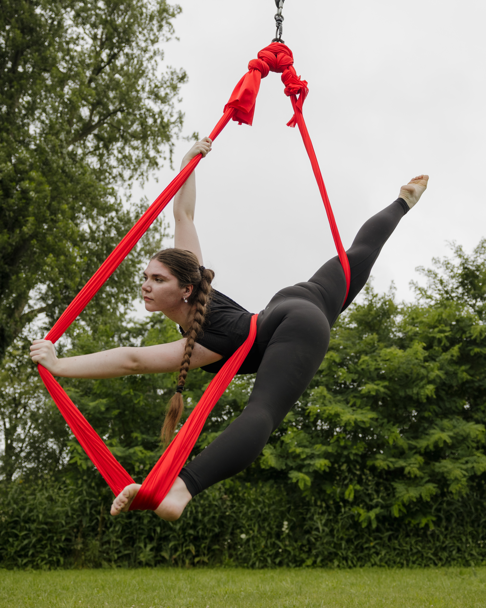

About Me

I am an artist in many ways. I like to paint, sketch, write, and dance. I have always been creative and believe it is my biggest strength. This is my 2nd program at Algonquin Collage, the first being Drawing Foundations. I am excited for what I can learn in this program because I am a HUGE nerd who loves learning new things!
My favorite artform is performing, I am a circus performer and have performed for large circus companies like LPC and Cirque Du Monde I am continuing my training and working as a coach throughout collage because my dream is to one day be apart of Cirque du Soleil , not as a performer but a creative. However I would not turn down the opportunity to perform with them.
You make mistakes, mistakes don't make you Maxwell Maltz
- Nail art
- Gym
- Cooking